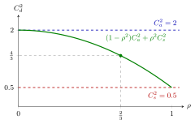

Departure SCV Approximation¶
Proposition¶
Consider a stable station with utilization , inter-arrival scv and service-time scv . The course approximates the squared coefficient of variation of the inter-departure times by
For a single server, , this reduces to (7.1.1)
This is an interpolation, not an exact result. In a tandem queue it is used as the link between stations, .
Interpretation¶
How variable is the output of a queue? It depends on how often the server idles. A busy server releases jobs at the pace of its service times; an idle server simply passes on the gaps between arrivals.

The figure plots the formula for the first station of Example 1, and , which gives . At the curve starts at the arrival level and at it ends at the service level; in between it weights the two by and . The marked point is the actual load , where .
The two end points carry the argument. When is close to the server is seldom idle, so most inter-departure times are service times and . When is small the server is usually idle at an arrival, so a job leaves about one service time after it came and the inter-departure times are close to the inter-arrival times, . The weights and are a choice that respects both limits; the exactness of any value in between is not claimed. With servers the service term is damped by , since several servers interleave their completions.
A useful check: for the formula gives for every and , which matches the exact fact that a stable M/M/1 queue sends out a Poisson process. A common slip is to feed to every station of a line: the second station sees the first station's departures, not the original arrivals.
Key Results¶
- (7.1.1): , a weighted average of and , so it always lies between them.
- : , with .
- Limits: as ; for , as .
- Tandem link: , combined with Sakasegawa's formula at every station.
- Propagation: for a reduction in lowers by , so every downstream station also waits less; the notes advise improving variability from the start of the chain (TF 7.1.1).
Examples¶
1. The link in Exercise 7.1.6. Station 1 has , and , so and
Station 2 (with , hour, ) then has hours.
2. Improving the first station helps the second. Halve to . Station 1 waits hour instead of , and its output becomes smoother:
The line saves hours of waiting, more than half of it at station 2.
3. The first station is not always the best place. Halve instead, leaving station 1 as in Example 1: hours, a saving of hours. Here station 2 is more heavily loaded ( against ), so its factor outweighs the downstream gain of Example 2. "Start at the front" is a rule of thumb, not a theorem; with the formulas above the comparison takes a few lines.
Prerequisites¶
Related Concepts¶
- M/M/1 Queue
- Open Queueing Network
- Busy Period
- SCV Estimation from Counts
- Arrival and Departure Rates
Sources¶
- Stochastic Operations Research · Week 7
- N. D. van Foreest, Sample Path Analysis and Simulation of Stochastic Systems, Section 7.1
Aliases: inter-departure time scv, departure variability approximation, linking equation, output variability of a queue, scv of inter-departure times Keywords: C_d^2 \approx (1-\rho^2)C_a^2 + \rho^2C_s^2, C_d^2 \approx 1+(1-\rho^2)(C_a^2-1)+\frac{\rho^2}{\sqrt{c}}(C_s^2-1), C_{a,2}^2 = C_{d,1}^2, G/G/c departures, variability propagation Symbols: delta, lambda, rho, square root
Last updated: 29 October 2026 20:42
Departure SCV ApproximationTandem QueueSquared Coefficient of VariationSakasegawa's FormulaServer UtilizationM/M/1 QueueOpen Queueing NetworkBusy PeriodSCV Estimation from CountsArrival and Departure Rates